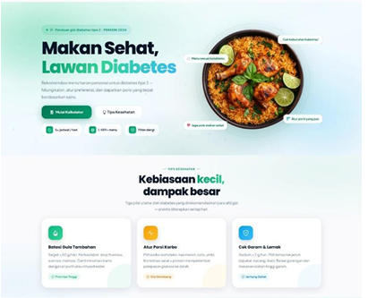

Diabets Care
Intelligent Meal Recommendation System for Type 2 Diabetes Patients

Diabets Care adalah sistem rekomendasi menu harian berbasis web yang dirancang untuk membantu penderita Diabetes Melitus Tipe 2 menentukan pilihan makanan yang sesuai dengan kebutuhan nutrisi, kondisi kesehatan, alergi, dan preferensi makanan masing-masing pengguna.
Sistem menggabungkan pendekatan Hybrid Filtering dan algoritma optimasi Least Squares untuk menghasilkan rekomendasi menu yang tidak hanya sesuai dengan preferensi pengguna, tetapi juga memenuhi kebutuhan gizi harian berdasarkan standar nutrisi penderita diabetes. Platform ini membantu pengguna memperoleh rekomendasi makanan yang lebih personal, seimbang, dan mendukung pengelolaan kadar gula darah secara berkelanjutan.
- Personalized Daily Meal Recommendation: Rekomendasi menu harian personal sesuai kondisi kesehatan dan kebutuhan masing-masing pengguna.
- Nutritional Requirement Calculation: Perhitungan matematis kebutuhan nutrisi dan kalori harian spesifik penderita diabetes.
- Hybrid Filtering Recommendation Engine: Algoritma rekomendasi gabungan (content-based & collaborative filtering) untuk pilihan makanan yang relevan.
- Least Squares Portion Optimization: Optimasi porsi makanan secara presisi agar memenuhi target gizi harian yang direkomendasikan.
- Allergy & Dietary Restriction Filtering: Penyaringan bahan makanan pemicu alergi atau pantangan diet khusus pengguna.
- Nutritional Composition Analysis: Analisis mendetail kandungan gizi (karbohidrat, serat, protein, lemak) di setiap menu masakan.
- 30-Day Meal Planning System: Perencanaan menu makanan terstruktur selama 30 hari untuk konsistensi pola makan sehat.
- User Profile Management: Pengelolaan data profil pengguna, riwayat medis, dan preferensi diet secara terpusat.
- Kebutuhan Gizi Terpenuhi: Membantu penderita diabetes memilih menu yang sesuai dengan kebutuhan nutrisi harian.
- Rekomendasi Personal: Menghasilkan rekomendasi makanan yang lebih personal berdasarkan kondisi dan preferensi pengguna.
- Porsi Optimal: Mengoptimalkan porsi makanan agar mendekati target kebutuhan energi, protein, lemak, karbohidrat, dan serat menggunakan algoritma optimasi.
- Pengendalian Pola Makan: Mendukung pengelolaan pola makan yang lebih terstruktur untuk membantu pengendalian diabetes secara berkelanjutan.